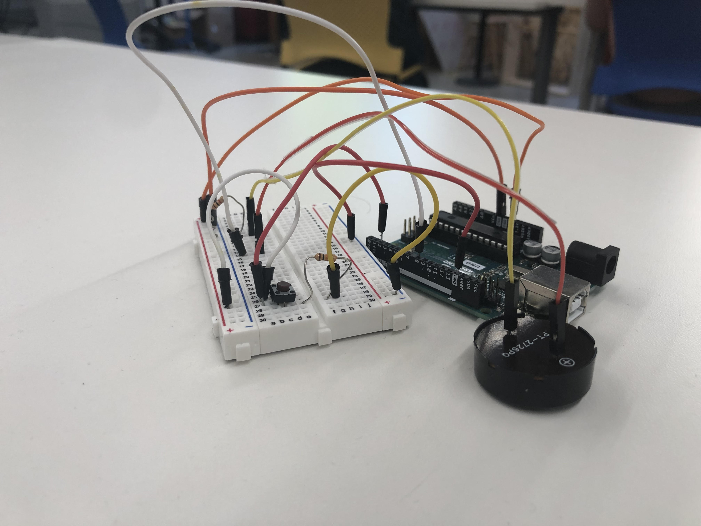

Week 6: Electronic Input Devices
Week 6 was by far the easiest week for me to understand
After having become accustomed to C and wiring output devices were just another step in my journey
The only issue was that I had to learn C++ instead of C
One of the devices was a buzzer, which I thought would be interesting since I had begun to play music again since coming to Harvard
So, lets get started, first things first, you need to make code for your pitches:
#define NOTE_B0 31
#define NOTE_C1 33
#define NOTE_CS1 35
#define NOTE_D1 37
#define NOTE_DS1 39
#define NOTE_E1 41
#define NOTE_F1 44
#define NOTE_FS1 46
#define NOTE_G1 49
#define NOTE_GS1 52
#define NOTE_A1 55
#define NOTE_AS1 58
#define NOTE_B1 62
#define NOTE_C2 65
#define NOTE_CS2 69
#define NOTE_D2 73
#define NOTE_DS2 78
#define NOTE_E2 82
#define NOTE_F2 87
#define NOTE_FS2 93
#define NOTE_G2 98
#define NOTE_GS2 104
#define NOTE_A2 110
#define NOTE_AS2 117
#define NOTE_B2 123
#define NOTE_C3 131
#define NOTE_CS3 139
#define NOTE_D3 147
#define NOTE_DS3 156
#define NOTE_E3 165
#define NOTE_F3 175
#define NOTE_FS3 185
#define NOTE_G3 196
#define NOTE_GS3 208
#define NOTE_A3 220
#define NOTE_AS3 233
#define NOTE_B3 247
#define NOTE_C4 262
#define NOTE_CS4 277
#define NOTE_D4 294
#define NOTE_DS4 311
#define NOTE_E4 330
#define NOTE_F4 349
#define NOTE_FS4 370
#define NOTE_G4 392
#define NOTE_GS4 415
#define NOTE_A4 440
#define NOTE_AS4 466
#define NOTE_B4 494
#define NOTE_C5 523
#define NOTE_CS5 554
#define NOTE_D5 587
#define NOTE_DS5 622
#define NOTE_E5 659
#define NOTE_F5 698
#define NOTE_FS5 740
#define NOTE_G5 784
#define NOTE_GS5 831
#define NOTE_A5 880
#define NOTE_AS5 932
#define NOTE_B5 988
#define NOTE_C6 1047
#define NOTE_CS6 1109
#define NOTE_D6 1175
#define NOTE_DS6 1245
#define NOTE_E6 1319
#define NOTE_F6 1397
#define NOTE_FS6 1480
#define NOTE_G6 1568
#define NOTE_GS6 1661
#define NOTE_A6 1760
#define NOTE_AS6 1865
#define NOTE_B6 1976
#define NOTE_C7 2093
#define NOTE_CS7 2217
#define NOTE_D7 2349
#define NOTE_DS7 2489
#define NOTE_E7 2637
#define NOTE_F7 2794
#define NOTE_FS7 2960
#define NOTE_G7 3136
#define NOTE_GS7 3322
#define NOTE_A7 3520
#define NOTE_AS7 3729
#define NOTE_B7 3951
#define NOTE_C8 4186
#define NOTE_CS8 4435
#define NOTE_D8 4699
#define NOTE_DS8 4978
#define REST 0
This will define all of our notes as well as rests, just make sure that when you're writing your main code you #include it
Now that thats done, heres the main code:
#include "pitches.h"
int tempo = 130;
int buzzer = 8;
class Button {
public:
int m_pin;
int m_state;
int m_prevState;
int m_toggled;
void update(int &state, int &prevState, int &toggled) {
state = digitalRead(m_pin);
if(state == HIGH) {
toggled = 1;
}
if(state == LOW && toggled == 1) {
toggled = 2;
prevState = HIGH;
}
}
Button(int, int, int, int);
};
Button::Button(int pin, int state, int prevState, int toggled): m_pin(pin), m_state(state), m_prevState(prevState), m_toggled(toggled) {
}
int melody[] = {
//City of Stars from one of my favorite movies: Lala Land
//As orchestrated by yours truly.
;delay(5000);
NOTE_B3,-4, REST, -64, NOTE_CS4,-4, NOTE_D4,2, REST, -32, NOTE_FS4,-1,
NOTE_GS4,-4, REST, -32, NOTE_A4,4,REST, 16, NOTE_FS4,-2, NOTE_GS4,-2, NOTE_E4,8, REST, -32,
NOTE_FS4,8, NOTE_CS4,-1, REST, 1,
NOTE_B3,2, REST, -64, NOTE_CS4,2, NOTE_D4,2, REST, -32, NOTE_FS4,-1,
NOTE_GS4, -4, NOTE_A4, 4, REST, -64, NOTE_F4, 4, REST, -32, NOTE_GS4, 2, NOTE_E4, 8,REST, -32,
NOTE_FS4, 2, REST, -32, NOTE_CS4, -1, REST, 1,
NOTE_CS4, 2, NOTE_D4, -1, REST, -2,
NOTE_FS4, 4, REST, -32, NOTE_E4, -4, NOTE_FS4, 4, NOTE_E4, 2, REST, 8,
NOTE_FS4, -4, NOTE_E4, 4, REST, 64, NOTE_FS4, -2, REST, 64,
NOTE_CS4, -2, NOTE_CS4, 8, REST, -16, NOTE_CS4, -8, REST, -16, NOTE_CS4, 4, NOTE_CS4, 1,
};
int notes = sizeof(melody) / sizeof(melody[0]) / 2;
int wholenote = (60000 * 2) / tempo;
int divider = 0, noteDuration = 0;
Button button = Button::Button(2, LOW, LOW, 0);
void setup() {
Serial.begin(9600);
for (int thisNote = 0; thisNote < notes * 2; thisNote = thisNote + 2) {
divider = melody[thisNote + 1];
if (divider > 0) {
noteDuration = (wholenote) / divider;
} else if (divider < 0) {
noteDuration = (wholenote) / abs(divider);
noteDuration *= 2.0;
}
tone(buzzer, melody[thisNote], noteDuration*0.9);
delay(noteDuration);
noTone(buzzer);
pinMode(buzzer, OUTPUT);
pinMode(button.m_pin, INPUT);
}
}
void loop() {
button.update(button.m_state, button.m_prevState, button.m_toggled);
if(button.m_prevState == HIGH) {
for (int thisNote = 0; thisNote < notes * 2; thisNote = thisNote + 2) {
divider = melody[thisNote + 1];
if (divider > 0) {
noteDuration = (wholenote) / divider;
} else if (divider < 0) {
noteDuration = (wholenote) / abs(divider);
noteDuration *= 2.0;
}
tone(buzzer, melody[thisNote], noteDuration*0.9);
delay(noteDuration);
noTone(buzzer);
pinMode(buzzer, OUTPUT);
pinMode(button.m_pin, INPUT);
}
button.m_prevState == LOW;
}
}
Let me just explain some parts of the code for you real quick
int tempo is pretty self explanatory but adjust it as you will to the desired tempo of the song
Set your buzzer to whichever pin you want, in my case 8 and afterwards I specified that after button press the song will be played
In this specific pitches library notes are defined as usual using a piano as reference with C4 being middle C
After you choose the specific note you want you can choose the duration from eigth notes to half notes etc
Placing a "-" on note duration also extends it slightly, a value you can select later on in the code by changing the note duration multiplier
Honestly aside from that there isnt too much to it, using my previous music knowledge allowed me to get this assignment done pretty quickly
One thing I will say is that finding the right tempo for the song as well as changing the duration multiplier is an important step not to forget
When I originally had written the code I listened to the song millions of times to figure out what notes were being played
Adjusting the duration of notes and assigning negative values to extend notes was crucial to making it sound as close to the original as possible
Heres my wiring for the project, nothing too crazy, just had to get the button and the buzzer working
And yeah! thats really all there is to it, heres City of Stars from La La Land